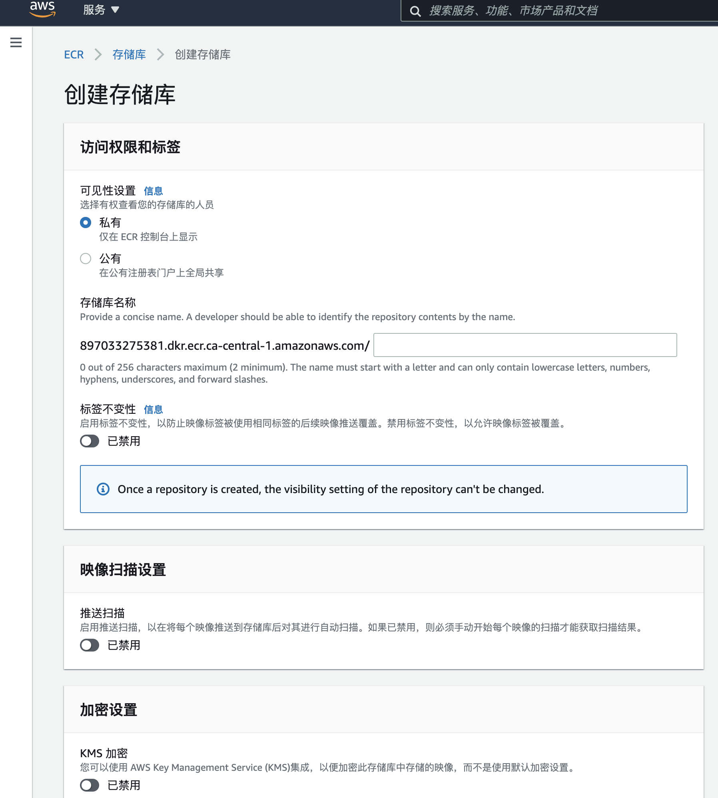
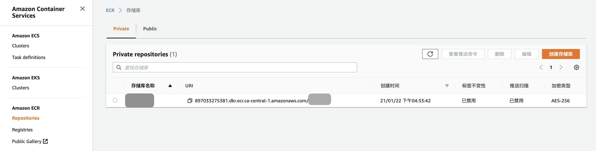

Amazon Elastic Container Registry（ECR）是一个完全托管的容器注册表，可轻松在任何地方存储，管理，共享和部署您的容器映像和工件。
1. 创建存储库


2. 推送命令
有关更多信息，请参阅 开始使用 Amazon ECR。
Mac
前提：安装 AWS CLI
see Installing the AWS CLI version 2
% which aws |
前提：安装 Docker
go to the Docker installation guide or mac_install_docker
检索身份验证令牌并向注册表验证 Docker 客户端身份
# 请确保您已安装 AWS CLI 和 Docker 的最新版本。有关更多信息，请参阅 开始使用 Amazon ECR 。 |
# 请确保您已安装 AWS CLI 和 Docker 的最新版本。有关更多信息，请参阅 开始使用 Amazon ECR 。 |